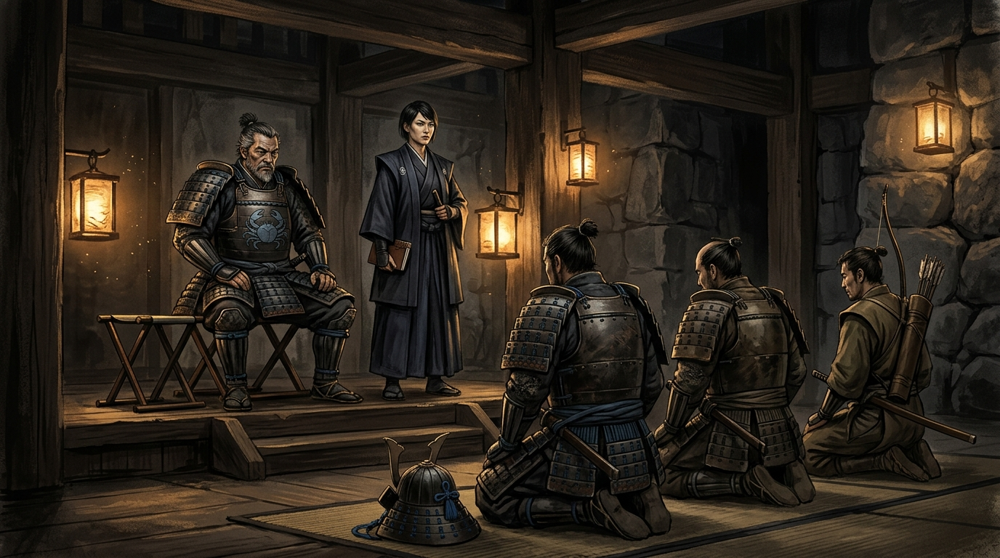
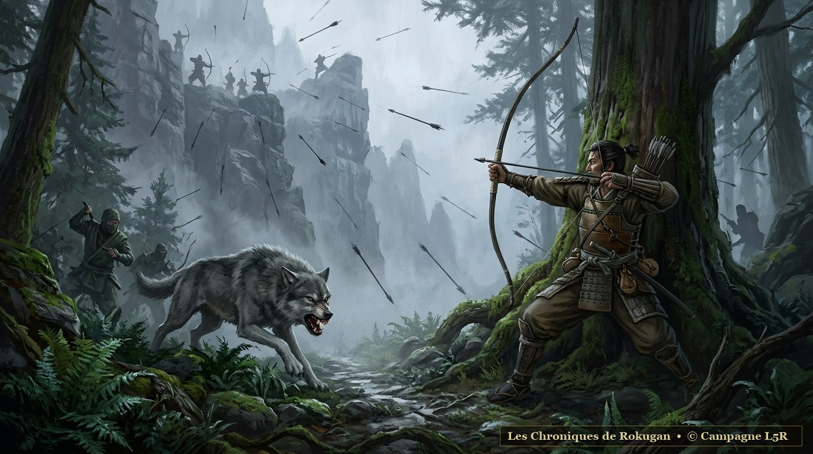
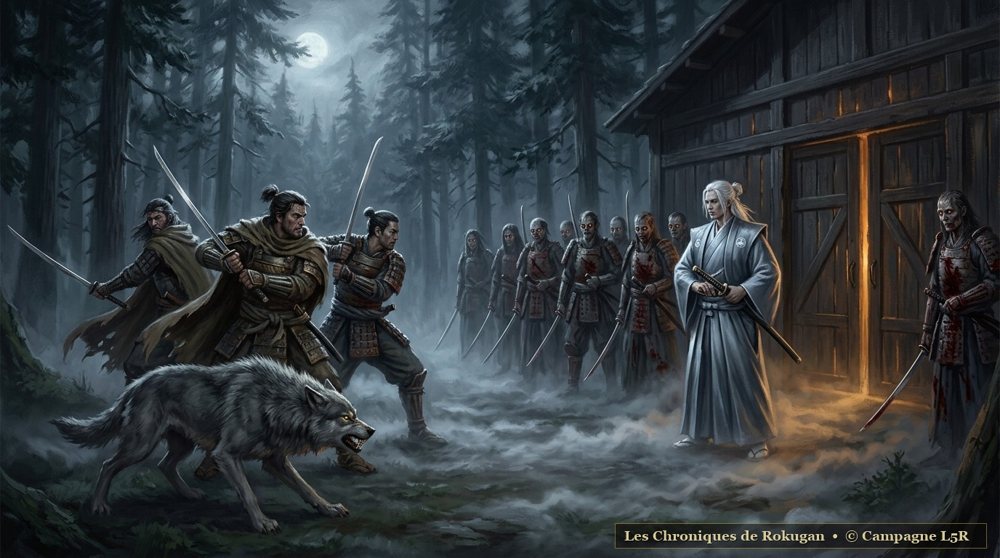

par Akira Tsuruchi, avec la participation d’Okado et de HiroHito
Trois semaines plus tard, dès mon arrivé à Kyuden Hida, je suis convoqué par Kisada et je retrouve Okado dans la salle d’audience. Kisada nous annonce qu’il souhaite nous confier une mission et nous présente HiroHito Hida qui nous accompagnera également. Je me rappelle l’avoir croisé lors des derniers combats contre l’outre-monde. Celui-ci m’avait fait bonne impression. Puis Kisada se tourne vers une femme d’âge mûre juste à côté de lui. « Vous devrez accompagner et protéger Yuriko Kuni depuis cette forteresse jusqu’au temple Shiro Kuni. Elle m’a demandé de constituer spécialement cette équipe alors ne la décevez pas » fit-il en la désignant de sa main.

Yuriko s’approche de nous et nous salue d’un mouvement de tête et nous explique nous avoir choisi car notre renommé en tant que magistrat d’émeraude l’a convaincue qu’elle pouvait avoir confiance en nous. Puis elle nous pose des questions, sur notre état de santé, sur ce que nous avons fait dernièrement, ce que nous ressentons depuis la dernière grande bataille. Rien ne semble lui échapper. Elle note scrupuleusement tous les échanges dans un petit carnet. Cette Shugenja spécialisé (à ne point en douter dans l’outre-monde) semble être vif d’esprit et avoir un profil très scientifique.
Notre compagnie devant rester discret nous partons à pied de la forteresse. L’air est pesant et après plusieurs heures de route, Yuriko nous donnes quelques conseils et informations sur notre mission. Il faut absolument que nous réussissions notre mission. Des samurais vont probablement s’en prendre à elle sur le chemin pour lui dérober ce qu’elle transporte dans son sac. Elle nous avertit aussi que, pour notre bien, il est nécessaire que nous lui obéissions au doigt et à l’œil.
Le soleil commence à décliner à l’horizon, nous avons décidé que je marcherai en éclaireur avec Raiju à 15 minutes devant le groupe sur cette route assez large pour faire passer une armée mais sur laquelle, étrangement, nous n’avons croisé aucune âme ce premier jour. Apercevant une cabane, je décide d’attendre mes camarades pour leur demander s’il souhaite y passer la nuit.
Je prends le premier tour de garde, puis passe le tour à Okado, la Shugenja s’est endormi assise dans un coin sitôt le repas fini. Je m’allonge sur une paillasse et me réveille le lendemain matin après une nuit tranquille.
Le lendemain après le déjeuner, Raiju s’arrête net sur le chemin et refuse d’avancer fixant un point au loin. Je ne vois rien mais préfère déposer l’étoffe rouge au sol comme convenu la veille avec mes compagnons en cas de danger probable ou avéré. Au bout de quelques minutes Raiju détend ses muscles, renifle le sol et repart comme si de rien n’était. Mais à peine deux heures plus tard, Raiju prend de nouveau la même posture et regarde dans la forêt qui borde la route. Cette fois-ci, j’ai l’impression de percevoir également une présence entre les arbres. Je lâche discrètement une nouvelle étoffe et demande à Raiju de poursuivre le chemin comme si de rien n’était afin de prendre d’éventuels ennemis à revers. Mais Raiju ne peut s’empêcher de continuer à grogner et à peine ai-je le dos tourné que j’entends une flèche siffler et se planter dans le sol à deux pas de notre position.

En courant nous réfugier dans la forêt, j’ai le temps d’identifier au moins cinq archers. J’en abats un d’une flèche en allant me mettre à l’abri derrière un arbre. Mais au moment de tirer une seconde flèche, tous les autres guerriers ont disparu. Je décide d’avancer prudemment avec Raiju en passant d’arbre en arbre. Je repère de nouveau les samurais qui se sont replié sur les hauteurs d’un rocher. J’arrive à en tuer un autre mais de cette fois-ci, tout le groupe se met à courir vers moi katana à la main. Raiju se lance dans la bataille et lacère de ses griffes deux d’entres eux dès le premier assaut, les tuant sur le coup et j’ai le temps d’abattre les autres avant qu’ils n’arrivent au corps à corps. Je continue mon tour dans la forêt pour essayer de repérer d’autres ennemis.
Ne trouvant personne, je rejoins le groupe resté sur la route avec Raiju. Okado m’annonce avoir tué les deux samurais qui gisent à ses pieds et que Yuriko les inspecte avec minutie. Elle nous montre un tatouage en spirale sur l’avant-bras de l’un d’entre eux. « Ce n’est pas la première fois que des samurais portant ce symbole m’attaquent », annonce-t-elle. « Je suis persuadée qu’ils connaissaient notre itinéraire et qu’ils attendaient le bon moment pour nous tomber dessus. ». Nous repartons par la route avec tous nos sens en alerte…
Mais sur toute la semaine suivante est tranquille. Nous sentons néanmoins que l’air se fait de plus en plus pesant et cette marche sur route n’a rien d’une sinécure.
Lorsque nous arrivons dans le village de Kakurega, nous sentons une certaine méfiance voire animosité contre notre groupe. Les gens nous évitent et préfèrent rentrer chez eux plutôt que de croiser notre regard. Nous allons à la taverne pour y prendre un repas et demander des chambres pour la nuit.
Lors du repas, mes compères crabes ne peuvent s’empêcher d’inviter un de leur clan à notre table pour partager une coupe de saké. La présence de ce samurai (Karu) semble déplaire à Yuriko encore plus qu’à moi et elle nous fait signe qu’il est temps de monter dans nos chambres. Nous prenons donc congé et, une fois dans nos chambres à l’étage, elle nous explique que l’attitude de ce guerrier n’était pas normale et qu’il devait être fortement souillé car tous ses gestes étaient beaucoup trop réguliers et mécaniques.
Okado prend le premier tour de garde pour la nuit mais il vient me réveiller après 3 heures de surveillance car il suspecte quelque chose et me demande de l’accompagner dehors. Une fois sortie j’appelle Raiju, qui ne semble pas inquiet, mais je me rends compte également que quelque chose ne va pas. Il n’y a plus aucun bruit autour de nous, nous avons l’impression d’être dans une bulle de vide oppressante nous empêchant de percevoir correctement notre environnement. Nous faisons le tour de l’auberge tous nos sens en éveil mais nous ne détectons rien de particulier. Okado part réveiller Yuriko et HiroHito pour établir un plan.
Une fois l’équipe regroupé dans la grande salle, nous sentons que la Shugenja commence à paniquer. Elle nous avertit que l’outre-monde commence à consumer Rokugan et a réussi à passer la muraille. Nous gardons cette information en tête mais nous tentons de la rassurer. De toute façon, il faut poursuivre la mission, nous sortons donc de l’auberge en espérant trouver des chevaux pour fuir cet endroit le plus rapidement possible. Mais les étables sont vides et alors que nous allons reprendre la route, nous apercevons au loin, trois silhouettes qui ont une démarche étrangement mécanique et saccadée venir du côté de la muraille, traverser la route et s’enfoncer dans la forêt. HiroHito décide d’aller enquêter du côté de la muraille, malgré les réticences de Yuriko, pour s’assurer qu’aucune brèche n’est réellement apparu. Il nous rejoindra sur la route le plus rapidement possible. Notre groupe se divise donc temporairement en deux, HiroHito courant vers la muraille et le reste du groupe prenant la grande route vers le Nord pour poursuivre la mission.
Après à peine quelques minutes plus tard, c’est le samurai crabe croisé à la taverne la veille qui fait irruption sur la route devant nous. Il a l’ai hébété et lorsque que Okado lui pose des questions sur ce qu’il fait ici, ses réponses vont vagues. Il n’a de cesse de répéter qu’il doit se rendre dans la forêt en pointant une direction de la main. Nous le laissons reprendre sa route mais nous ne sommes pas tranquilles. Le village est en danger et si des Oni de l’outre-monde prennent possession de celui-ci, la souillure pourrait se répandre très vite si elle n’est pas endiguée.
Yuriko refuse catégoriquement que nous nous écartions du chemin, son chargement étant plus important encore que ce village. Mais Okado et HiroHito, qui nous a rejoint durant notre réflexion, ne lui laisse pas le choix car l’honneur de leur clan est en jeu. Nous partons donc dans la forêt à la poursuite du Karu, le samurai souillé.

Après quelques minutes de marche, toujours dans ce silence assourdissant, nous atteignons une clairière au milieu de laquelle se trouve un entrepôt d’où provient une faible lumière. Okado et moi, nous nous approchons de la porte pour tenter de distinguer ce qu’il se passe à l’intérieur. Nous entendons au moins 3 personnes dans l’entrepôt. Nous essayons d’entrouvrir discrètement la porte mais celle-ci émet un grincement sinistre… Les silhouettes, au nombre de 4, se retournent vers nous et nous entendons au même instant du mouvement dans notre dos. Une des silhouettes qui nous fait face se présente « je suis Genzo Doji, nous vous attendions samurai ». Je bafouille quelques excuses creuses et lui répond que mon compagnon et moi-même, nous allons nous retirer. Mais nous ne pouvons allez bien loin car 10 samouraïs nous font face devant l’entrepôt. Le samouraï du clan Doji sort à son tour de l’entrepôt, passe entre Okado et moi, ne prenant même pas la peine de nous contourner. Il se tourne vers nous, dos à la dizaine de samouraï, qui le salue immédiatement en s’inclinant. Nous sommes faits comme des rats. Je regarde Okado dans les yeux et nous ne comprenons immédiatement, il va falloir livrer bataille.
HiroHito sentant la situation s’envenimer s’élance de l’orée de la forêt en défiant le samouraï grue. Celui-ci fait volteface et se dirige vers HiroHito avec deux samouraïs crabe nous laissant avec la dizaine de subalternes nous faisant face.
Le temps semble suspendu, nous nous observons tous en essayant de percevoir une faille dans la défense adverse. Un des trois samurais me faisant face s’élance sabre au clair, mais je le transperce d’une flèche en pleine poitrine avant qu’il n’ait pu faire deux pas et j’ai le temps d’encocher et de tirer deux autres flèches avant que les autres ne se rapproche assez pour m’inquiéter. De son côté Raiju a terrassé deux de ses adversaires mais le troisième parvient à lui asséner un coup de katana sur le flan. Fou de rage Raiju se jette sur lui et l’éviscère de haut en bas.
Je vois HiroHito balayer littéralement le samurai grue d’un coup de tetsubo, celui-ci meurt sur le coup et tous les adversaires restant s’effondrent alors inanimés comme des pantins auxquels on aurait coupé les fils. D’un coup, les bruits environnent reviennent comme si la bulle qui nous emprisonnait venait d’éclater.
Inspectant les cadavres, Yuriko découvre :
- Une lettre adressée au « seigneur des murmure » à la capitale du royaume Otosan Uchi. Elle est difficilement lisible mais nous arrivons à comprendre que l’ordre principale de leur mission était de voler les parchemins de Yuriko.
- Un médaillon d’obsidienne sculpté en forme de chrysanthème flétrie
- Une fiole contenant du sang noir imprégné de souillure.
Elle range ces trois éléments dans son sac et nous fait part de son analyse. Ces hommes font partie d’une faction qui sert Iuchiban, un sorcier dangereux et puissant pratiquant le mahō, et ils sont prêts à tout pour récupérer les parchemins car ils contiennent des savoirs qui pourraient les bannir définitivement.
Nous rentrons dans l’entrepôt pour soigner la blessure de Raiju et HiroHito qui semblait agité reprend peu à peu son calme.
Avec le même grincement par lequel tout à commencer, la porte s’ouvre et nous voyons Megumi portant son tapis de cérémonie entrer dans l’entrepôt et nous saluer. Il se place face à nous, nous regarde et s’adresse à nous d’une voix cristalline « Vous avez l’air fatigués. C’est raisonnable. Vous pensez avoir compris quelque chose ce soir ? Et pourtant, vous n’avez vu que l’ombre de ce qui vient. »
Il marque une pause comme pour nous laisser le temps d’assimiler ses paroles puis reprend : « Il y a très longtemps, un homme a décidé que la mort était un problème à résoudre. Il s’appelait Iuchiban. Il a trouvé la solution. Le défaut dans sa solution, c’est qu’elle fonctionne. Pas pour lui mais pour ceux qui gardent sa mémoire vivante ».
Il me regarde et dit « Certain ont accepté cette mémoire pour avoir de la puissance. ».
Il regarde HiroHito et reprend « Certain l’ont acceptée parce qu’on ne leur a pas donné le choix. ».
Enfin il tourne sa tête vers Okado et poursuit « Et certain ont été choisi avant même de naître. »
Puis en silence, il sort de sa manche un origami. C’est un lion plié dans du papier d’une couleur faisant penser à du sang séché. Et continue tout en le déposant délicatement sur le sol « Ce lion n’est pas revenu par hasard. Il a été ramené par la même chose qui sait maintenant que vous existez. Ils savent que vous avez vu Genzo et ils savent que Yuriko voyage avec vous. Ils ne vous sous-estimeront plus. Vous pouvez ignorer tout ça et rentrer chez vous. Le Crabe trouvera bien d’autres samouraïs pour cette affaire. ».
Il se lève, replie son tapis et se dirige vers la porte en lançant sans se retourner et disparaissant dans la nuit « Mais vous n’êtes pas de ce genre-là ! »
Je range soigneusement l’origami laissé par Megumi et nous reprenons la route en méditant les paroles du sage.
Un matin, Yuriko nous fait signe de quitter l’itinéraire principale et de passer par la forêt. Après plusieurs heures de marche entre les arbres, nous parvenons à une paroi rocheuse avec deux rectangles de calcaire noir dessus. Yuriko ne tient plus en place et se met à gratter frénétiquement la paroi. Elle pose de temps en temps son oreille sur la pierre comme pour percer un secret enfoui dans la roche. Puis après un long moment, elle se retourne vers nous. Ses yeux sont secs mais quelque chose a changé dans son expression, c’était comme si elle venait de se séparer d’un poids qui pesait sur ses épaules depuis bien trop longtemps.
« Cela fait 20 ans que je recherche cet endroit. De l’autre côté de ce mur, c’est l’entrée de la tombe cachée de Iuchiban. C’est un pont entre Rokugan et l’outre-monde. Un pont entre notre territoire et le monde de Fu Leng. Un pont entre le monde des vivants et le monde des morts. »
Elle regarde les glyphes. Les protections sont intactes…